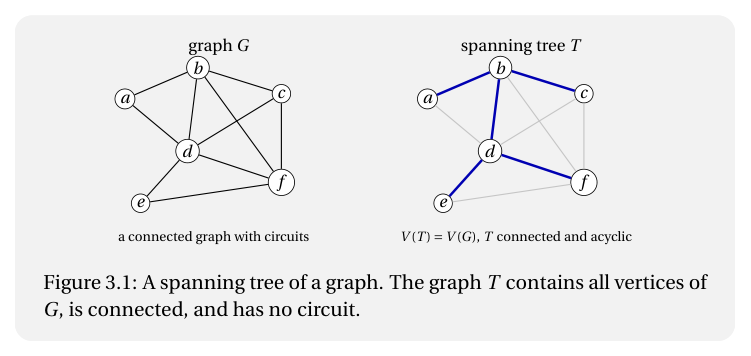
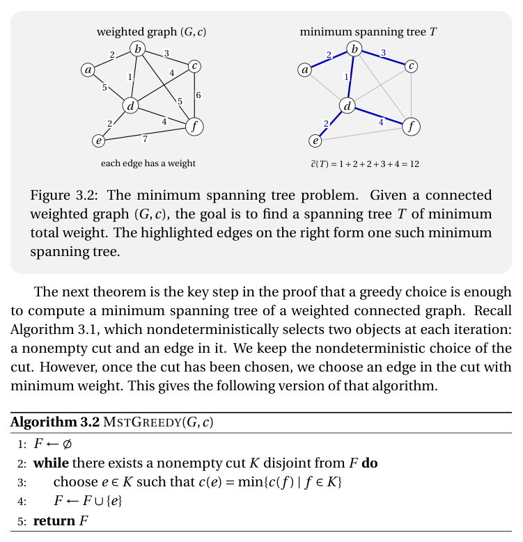

Seja $G$ um grafo. Dizemos que um subgrafo gerador $T$ de $G$ é uma árvore geradora (spanning tree) de $G$ se $T$ é uma árvore.

Lembre-se de que um corte (cut) em um grafo $G$ é um subconjunto $K \subseteq E(G)$ tal que $K = \delta(X)$ para algum subconjunto $X \subseteq V(G)$. O próximo algoritmo descreve um procedimento não-determinístico que recebe um grafo $G$ e constrói um subconjunto $F$ de $E(G)$. A cada iteração, o algoritmo escolhe não-deterministicamente um corte não-vazio $K$ disjunto de $F$, e em seguida escolhe uma aresta $f \in K$ para ser adicionada a $F$. Mostraremos que esse algoritmo termina após um número finito de passos e que, sempre que o grafo de entrada for conexo, o conjunto de arestas retornado é o conjunto de arestas de uma árvore geradora de $G$.
Suponha agora que $(V(G), F)$ é acíclico no início de alguma iteração. Seja $K$ um corte não-vazio de $G$ tal que $K \cap F = \emptyset$, e seja $xy := f \in K$ a aresta selecionada pelo algoritmo. Mostraremos que $(V(G), F \cup \{f\})$ é acíclico.
Suponha, por contradição, que $(V(G), F \cup \{f\})$ contém um circuito $C$. Como $(V(G), F)$ é acíclico, o circuito $C$ deve conter a aresta $f$. Logo $(V(G), F)$ contém um $(x, y)$-caminho $\langle u_0, \ldots, u_k \rangle$. Seja $X \subseteq V(G)$ tal que $K = \delta_G(X)$. Renomeando $x$ e $y$ se necessário, podemos supor que $x \in X$ e $y \in V(G) \setminus X$. Como $u_0 = x \in X$ e $u_k = y \in V(G) \setminus X$, existe $i \in [0 : k)$ tal que $u_i \in X$ e $u_{i+1} \in V(G) \setminus X$. Assim $u_i u_{i+1} \in \delta_G(X) = K$. Por outro lado, como $\langle u_0, \ldots, u_k \rangle$ é um caminho em $(V(G), F)$, temos $u_i u_{i+1} \in F$. Portanto $u_i u_{i+1} \in K \cap F$, contradizendo o fato de que $K \cap F = \emptyset$.
Portanto $(V(G), F \cup \{f\})$ é acíclico. Assim o invariante é preservado em cada iteração. □
Como $H$ é acíclico, decorre que $H$ não é conexo. Portanto existem vértices $x, y \in V(G)$ tais que $H$ não contém um $(x, y)$-caminho. Seja $X := [x]_H$, isto é,
Então $x \in X$ e $y \notin X$, donde $\emptyset \neq X \subsetneq V(G)$. Além disso, $\delta_H(X) = \emptyset$, pela definição de $X$.
Como $G$ é conexo e $\emptyset \neq X \subsetneq V(G)$, temos, pelo Teorema 1.10, que $\delta_G(X) \neq \emptyset$. Seja $K := \delta_G(X)$. Então $K$ é um corte não-vazio de $G$. Além disso, como $\delta_H(X) = \emptyset$ e $E(H) = F$, nenhuma aresta de $F$ tem uma extremidade em $X$ e a outra em $V(G) \setminus X$. Logo $K \cap F = \emptyset$. □
Mostramos primeiro que o algoritmo não pode parar enquanto $|F| < |V(G)| - 1$. De fato, pelo Lema 3.2, se $|F| < |V(G)| - 1$, existe um corte não-vazio $K$ de $G$ tal que $K \cap F = \emptyset$. Logo a condição do laço ainda é satisfeita.
Como $|F|$ aumenta de 1 a cada iteração, o algoritmo eventualmente alcança uma iteração para a qual $|F| = |V(G)| - 1$. Nesse ponto, $H := (V(G), F)$ é acíclico e $|F| = |V(G)| - 1$. Logo, pelo Teorema 1.8, $H$ é uma árvore. Como $V(H) = V(G)$, $H$ é uma árvore geradora de $G$.
Resta mostrar que o algoritmo para nesse ponto. Seja $K$ um corte não-vazio de $G$. Escolha $X \subseteq V(G)$ tal que $K = \delta_G(X)$. Como $K \neq \emptyset$, o conjunto $X$ é um subconjunto próprio não-vazio de $V(G)$. Como $H$ é conexo, pelo Teorema 1.10,
Mas $H$ é um subgrafo de $G$. Portanto
Assim $K \cap F \neq \emptyset$. Logo não existe corte não-vazio de $G$ disjunto de $F$, e portanto o algoritmo para.
Assim o algoritmo executa $|V(G)| - 1$ iterações e retorna um conjunto $F \subseteq E(G)$ tal que $(V(G), F)$ é uma árvore geradora de $G$. □
Como $f$ é uma aresta de $T(x, y)$, existe $j \in [0 : \ell)$ tal que $f = z_j z_{j+1}$. Considere agora a sequência $\langle z_{j+1}, z_{j+2}, \ldots, z_\ell, z_0, z_1, \ldots, z_j \rangle$. Essa é uma $(z_{j+1}, z_j)$-caminho em $T'$. De fato, todas as suas arestas, exceto $z_\ell z_0 = xy = e$, são arestas de $T(x, y)$ distintas de $f$, e $z_\ell z_0 = xy = e$. Assim $T'$ contém um caminho entre as duas extremidades de $f$. Em particular, $z_j \sim_{T'} z_{j+1}$.
Observe que $|E(T')| = |E(T)| = |V(T)| - 1 = |V(T')| - 1$. Para completar a demonstração de que $T'$ é uma árvore, pelo Teorema 1.9, basta mostrar que $T'$ é conexo.
Sejam $u, v \in V(T')$. Como $T$ é conexo, existe um $(u, v)$-caminho
em $T$, onde $u_0 = u$ e $u_k = v$. Se $f \notin E(P)$, então $P$ é também um $(u, v)$-caminho em $T'$. Suponha então que $f \in E(P)$. Existe $i \in [0 : k)$ tal que $f = u_i u_{i+1}$. O segmento inicial $\langle u_0, \ldots, u_i \rangle$ é um caminho em $T'$, e portanto é um caminho em $T'$. Analogamente, o segmento final $\langle u_{i+1}, \ldots, u_k \rangle$ é um caminho em $T'$. Além disso, pela primeira parte da demonstração, as duas extremidades de $f$ são conectadas por um caminho em $T'$. Portanto $u_0 \sim_{T'} u_i$, $u_i \sim_{T'} u_{i+1}$, e $u_{i+1} \sim_{T'} u_k$. Pela transitividade da acessibilidade, segue que $u \sim_{T'} v$.
Assim $T'$ é conexo e $|E(T')| = |V(T')| - 1$, e portanto, pelo Teorema 1.9, $T'$ é uma árvore. □
Passamos agora ao problema da árvore geradora mínima.
Seja $G$ um grafo e seja $c : E(G) \rightsquigarrow \mathbb{R}$ uma função. O par $(G, c)$ é chamado de grafo ponderado (weighted graph), e $c(e)$ é chamado de peso (weight) da aresta $e$.
Para um subconjunto $F \subseteq E(G)$, definimos
Se $H$ é um subgrafo de $G$, escrevemos também $\tilde{c}(H) := \tilde{c}(E(H))$.
Dado um grafo ponderado $(G, c)$, com $G$ conexo, o problema da árvore geradora mínima (minimum spanning tree problem) consiste em encontrar uma árvore geradora $T$ de $G$ tal que
para toda árvore geradora $J$ de $G$. Tal árvore geradora $T$ é chamada de árvore geradora mínima (minimum spanning tree) de $(G, c)$.

O próximo teorema é o passo-chave na demonstração de que uma escolha gulosa é suficiente para calcular uma árvore geradora mínima de um grafo ponderado conexo. Lembre-se do Algoritmo 3.1, que seleciona não-deterministicamente dois objetos a cada iteração: um corte não-vazio e uma aresta nele. Mantemos a escolha não-determinística do corte. Porém, uma vez que o corte foi escolhido, selecionamos uma aresta do corte com peso mínimo. Isso resulta na seguinte versão do algoritmo.
Seja $(G, c)$ um grafo ponderado. Dizemos que um subconjunto $F \subseteq E(G)$ é bom (good) se existe uma árvore geradora mínima $T$ de $(G, c)$ tal que $F \subseteq E(T)$.
Como $F$ é bom, existe uma árvore geradora mínima $T$ de $(G, c)$ tal que $F \subseteq E(T)$. Se $e \in E(T)$, então $F \cup \{e\} \subseteq E(T)$, e portanto $F \cup \{e\}$ é bom.
Suponha então que $e \notin E(T)$. Seja $X \subseteq V(G)$ tal que $K = \delta(X)$. Seja $x$ a extremidade de $e$ em $X$, e seja $y$ a extremidade de $e$ em $V(G) \setminus X$. Como $T$ é conexo, existe um $(x, y)$-caminho
em $T$. Como $u_0 = x \in X$ e $u_k = y \in V(G) \setminus X$, existe $i \in [0 : k)$ tal que $u_i \in X$ e $u_{i+1} \in V(G) \setminus X$. Assim $f := u_i u_{i+1} \in K$. Como $e$ tem peso mínimo dentre as arestas de $K$, temos $c(e) \leq c(f)$. Considere $T' := T - f + e$. Pelo Lema 3.4, o grafo $T'$ é uma árvore. Como $V(T') = V(T) = V(G)$ e $E(T') \subseteq E(G)$, $T'$ é uma árvore geradora de $G$. Além disso,
Como $T$ é uma árvore geradora mínima de $(G, c)$, $T'$ também é uma árvore geradora mínima de $(G, c)$. Por fim, $f \notin F$, pois $f \in K$ e $K \cap F = \emptyset$. Logo $F \subseteq E(T')$. Além disso, $e \in E(T')$. Portanto $F \cup \{e\} \subseteq E(T')$. Assim $F \cup \{e\}$ é bom. □
Afirmamos que $y \notin X$. De fato, se $y \in X$, então $T - e$ contém um $(x, y)$-caminho. Adicionando a aresta $e = xy$ a esse caminho, obtemos um circuito em $T$, uma contradição. Portanto $y \in V(T-e) \setminus X$.
Agora, pela definição de $X$, temos $\delta_{T-e}(X) = \emptyset$. Como $e$ tem uma extremidade em $X$ e a outra em $V(T-e) \setminus X$, segue que $\delta_T(X) = \{e\}$. Seja $K := \delta_G(X)$. Então $K$ é um corte de $G$ e $e \in K$. Além disso, como $F \subseteq E(T)$ e $\delta_T(X) = \{e\}$, temos $K \cap (F \setminus \{e\}) = \emptyset$.
Resta provar que $c(e) \leq c(f)$ para todo $f \in K$. Seja $f \in K$. Se $f = e$, não há nada a provar. Suponha então que $f \neq e$. Como $f \in K = \delta_G(X)$, a aresta $f$ tem uma extremidade em $X$ e a outra em $V(G) \setminus X$. Como também $\delta_T(X) = \{e\}$, a aresta $e$ pertence ao único caminho em $T$ que une as extremidades de $f$. Portanto, pelo Lema 3.4, o grafo $T' := T - e + f$ é uma árvore. Como $V(T') = V(T) = V(G)$ e $E(T') \subseteq E(G)$, $T'$ é uma árvore geradora de $G$. Como $T$ é uma árvore geradora mínima de $(G, c)$, temos
Logo $c(e) \leq c(f)$. Portanto $c(e) = \min\{c(f) \mid f \in K\}$. □
Resta mostrar que essa árvore geradora tem peso mínimo. Provamos por indução no número de iterações que $F$ é bom no início de cada iteração. No início, $F = \emptyset$, que é bom porque $G$ tem ao menos uma árvore geradora mínima; além disso, $E_0 \cap F = \emptyset$. Suponha agora que $F$ é bom no início de uma iteração. O algoritmo escolhe um corte não-vazio $K$ com $K \cap F = \emptyset$, e então escolhe uma aresta $e \in K$ de peso mínimo em $K$. Pelo Teorema 3.5, $F \cup \{e\}$ é bom. Assim o invariante é preservado.
Ao final do algoritmo, $(V(G), F)$ é uma árvore geradora de $G$. Como $F$ é bom, existe uma árvore geradora mínima $T$ de $(G, c)$ tal que $F \subseteq E(T)$. Mas tanto $(V(G), F)$ quanto $T$ são árvores geradoras de $G$, e portanto ambas têm $|V(G)| - 1$ arestas. Logo $F = E(T)$. Assim $(V(G), F)$ é uma árvore geradora mínima de $(G, c)$. □
Para cada $j \in [0 : m]$, seja $E_j := \{e_k \mid k \in [0 : j)\}$. Provaremos por indução que, ao longo de toda a execução do algoritmo, vale que:
No início, $F = \emptyset$, que é bom pois $G$ é conexo e portanto possui uma árvore geradora mínima; além disso, $E_0 \cap F = \emptyset$.
Suponha agora que, no início de uma iteração do laço-para, vale que $F$ é bom e que, para cada $xy \in E_i \setminus F$, existe um $(x, y)$-caminho em $(V(G), F)$. Temos dois casos a considerar.
Primeiro, suponha que $(V(G), F \cup \{e_i\})$ não é acíclico. Devemos provar que o invariante é preservado, a saber:
Nesse caso, (1.i) é trivial, pois vale por hipótese. Para (ii), sejam $x$ e $y$ as extremidades de $e_i$. Como $(V(G), F \cup \{e_i\})$ não é acíclico, o grafo $(V(G), F)$ contém um $(x, y)$-caminho. Isso prova (1.ii).
Suponha agora que $(V(G), F \cup \{e_i\})$ é acíclico. Devemos provar que:
Seja $H := (V(G), F)$ e seja $X := [x]_H$. Então $\delta_H(X) = \emptyset$. Seja $K := \delta_G(X)$. Observe que $c(e_i) = \min\{c(f) \mid f \in K\}$. Seja $f \in K \setminus \{e_i\}$. Afirmamos que $f = e_j$ para algum $j \in (i : m)$. Para ver isso, observe que se $uv \in E_i \setminus F$, então $H$ contém um $(u, v)$-caminho, e portanto qualquer corte que separa $u$ de $v$ também contém uma aresta de $F$. Como $K \cap (E_i \setminus F) = \emptyset$. Como $K \cap F = \emptyset$, segue que $f = e_j$ para algum $j \in (i : m)$ e, assim, $c(e_i) \leq c(f)$. Pelo Teorema 3.5, $F \cup \{e_i\}$ também é bom, e assim (2.i) vale. Para (ii), observe que $E_{i+1} \setminus (F \cup \{e_i\}) = E_i \setminus F$, e portanto (2.ii) vale por hipótese.
Resta provar que o conjunto final $F$ define uma árvore geradora. Como $F$ é bom, temos que $H := (V(G), F)$ é acíclico. Além disso, para toda aresta $xy \in E(G) \setminus F$, existe um $(x, y)$-caminho em $H$. Afirmamos que $H$ é conexo. Seja $u \in V(G)$ e considere o conjunto $X := [u]_H$. Seja $x \in X$ e suponha que $xy \in E(G) \setminus F$. Como $H$ contém um $(x, y)$-caminho, temos $y \in X$. Portanto $\delta_G(X) = \emptyset$. Como $G$ é conexo, temos $X = \emptyset$ ou $X = V(G)$. Como $X \neq \emptyset$, temos $X = V(G)$. Portanto $H$ é conexo. □
Sejam $T_1$ e $T_2$ árvores geradoras de um grafo $G$. Mostre que, para cada $e \in E(T_1) \setminus E(T_2)$, existe $f \in E(T_2) \setminus E(T_1)$ tal que ambas
são árvores geradoras de $G$.
Seja $(G, c)$ um grafo ponderado. Mostre que, se $T$ e $F$ são árvores geradoras mínimas de $(G, c)$, então as listas dos pesos das arestas de $T$ e de $F$, ordenadas em ordem não-decrescente de peso, são idênticas.
Seja $(G, c)$ um grafo ponderado conexo e seja $\emptyset \neq X \subseteq V(G)$. Prove ou refute cada uma das seguintes afirmações.
Seja $(G, c)$ um grafo ponderado conexo tal que $c(e) \neq c(f)$ para todo par distinto de arestas $e, f \in E(G)$. Mostre que $(G, c)$ tem uma única árvore geradora mínima.
Seja $(G, c)$ um grafo ponderado conexo. Forneça um algoritmo que compute o conjunto de todas as arestas que pertencem a alguma árvore geradora mínima de $(G, c)$. Prove a corretude do seu algoritmo e determine sua complexidade de tempo.
Seja $(G, c)$ um grafo ponderado conexo. Mostre que $(G, c)$ tem uma única árvore geradora mínima se e somente se todo corte não-vazio $K$ de $G$ contém uma única aresta $e \in K$ tal que
Mostre que a recíproca não vale.
Seja $(G, c)$ um grafo ponderado conexo e seja $T$ uma árvore geradora de $G$. Defina
Uma aresta $e \in E(T)$ tal que $c(e) = b(T)$ é chamada de aresta gargalo (bottleneck edge) de $T$. Uma árvore geradora $T$ de $G$ é chamada de árvore geradora de gargalo mínimo (minimum-bottleneck spanning tree) de $(G, c)$ se $b(T)$ é mínimo entre todas as árvores geradoras de $G$.
Prove ou refute cada uma das seguintes afirmações.